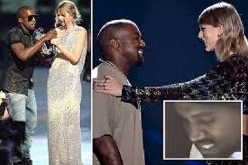
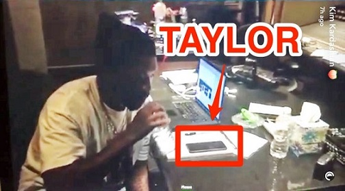

It was so nice throwing big parties
Jump into the pool from the balcony
Everyone swimming in a champagne sea
And there are no rules when you show up here
Bass beat rattling the chandelier
Feeling so Gatsby for that whole year
So why'd you have to rain on my parade?
I'm shaking my head
I'm locking the gates
This is why we can't have nice things, darling
Because you break them, I had to take them away
This is why we can't have nice things, honey
Did you think I wouldn't hear all the things you said about me?
This is why we can't have nice things
It was so nice being friends again
There I was giving you a second chance
But you stabbed me in the back
while shaking my hand
And therein lies the issue,
friends don't try to trick you
Get you on the phone and mind-twist you

And so I took an axe to a mended fence
But I'm not the only friend you've lost lately (Hmm-hmm)
If only you weren't so shady
This is why we can't have nice things, darling
Because you break them, I had to take them away
This is why we can't have nice things, honey
Did you think I wouldn't hear all the things you said about me?
This is why we can't have...
Here's a toast to my real friends
They don't care about the he said, she said
And here's to my baby
He ain't reading what they call me lately
And here's to my mama
Had to listen to all this drama
And here's to you...
'Cause forgiveness is a nice thing to do
Hahaha, I can't even say it with a straight face!
This is why we can't have nice things, darling (Darling)
Because you break them, I had to take them away
This is why we can't have nice (Uh-uh) things (Oh no), honey (Baby, oh)
Did you think I wouldn't hear all the things you said about me?
This is why we can't have nice things, darling (Ooh)
And here's to my real friends
(Oh) Because you break them, I had to take them
And here's to my baby
(Oh) Nice things, honey
They don't care about the he said, she said
Did you think I wouldn't hear all the things you said about me?
This is why we can't have... nice things.